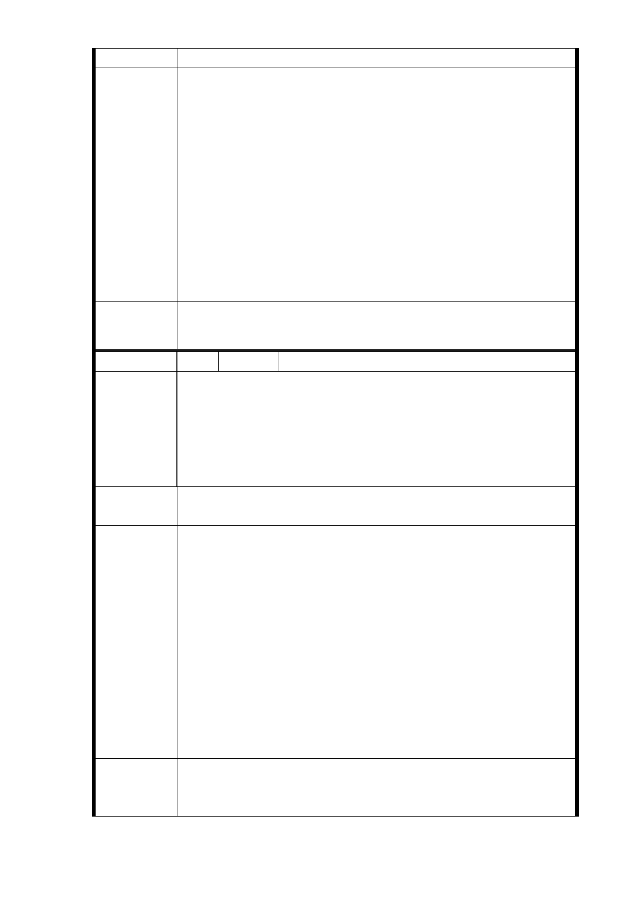

務人口數之經濟效益，以昭公信。
1.行政院於 99 年 2 月 12 日以院臺交字第 0990092593 號函正
式核定本路線。
2.環境影響說明書定稿本於 97 年 3 月 7 日獲環保署同意備查
（環署綜字第 0970009185B 號）
3.依行政院經濟建設委員會於 98 年 12 月 21 日召開第 1378
市 府 回 應 次委員會議審議臺北捷運信義線向東延伸段規劃案，結論
意 見 略以：「本案有助於疏解信義計畫區以東地區交通，帶動沿
線發展，原則同意。…」，另捷運建設除運輸量大、安全性
高、舒適便捷外，由於捷運車站所帶動之人潮常促成鄰近
土地之再利用與地區之更新開發。因此信義線捷運系統延
伸服務可擴大營運效益，進而促進地方繁榮、土地開發、
增加就業機會與經濟成長等效益。
委員會決議 同「市府回應意見」。
編 號 13 陳情人 應素靖
1.信義捷運東延線相關都市變更已經有超過 5 公頃的土地，
是否應該先做環境可行性評估及居住密度適宜性規劃。
陳情理由
2.捷三用地緊鄰山坡地會不會造成土石的崩塌有必要做環境
評估。
3.此區域圖書館、活動中心不足，是否應事前規劃以因應現
在及將來人口暴漲的困境。
建議辦法
請台北市捷運工程局重新評估本捷運東延案的都市計畫與服
務人口數之居住品質，及環境評估以昭公信。
1.捷運信義線東延段工程已依法辦理環境影響評估，業已完
成「環境影響說明書」經行政院環境保護署環境影響評估
審查委員會第 157 次會議審查通過，並於 96 年 11 月 15
日公告，環境影響說明書定稿本於 97 年 3 月 7 日獲環保署
同意備查（環署綜字第 0970009185B 號函）。另有關「捷
市 府 回 應 運信義線東延段工程環境影響說明書」詳細內容請至行政
意 見 院環境保護署網頁下載。
2.有關此區域圖書館、活動中心規劃，與捷運建設無直接關
聯。R03 車站北側廣慈博愛園區（約 6.5 公頃）都市計畫
已劃設 1.6 公頃的公園用地，而社會福利用地（約 2.9 公
頃）使用性質及管制內容，未來辦理開發亦可納入圖書館、
活動中心之規劃設置。
一、R03 站南側捷三用地，維持公展範圍（基地面積 3,844
委員會決議
㎡），並辦理土地開發。
二、同「市府回應意見」。
- 57 -